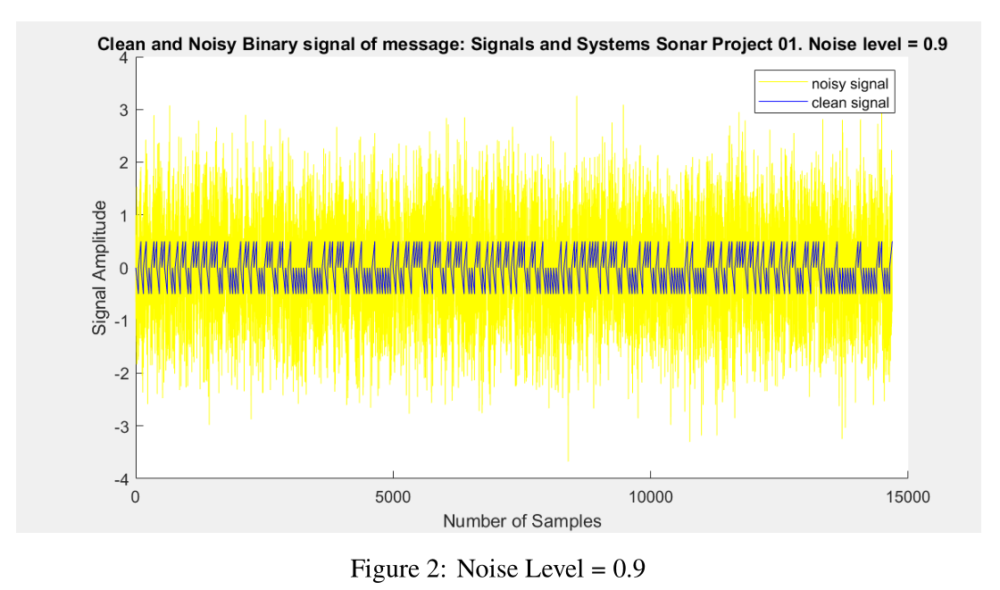

Sonar Signal Decryption with Matched Filter
February 2022
EN.520.214 Signals and Systems
Objectives:
Use MATLAB to create a sinusoidal matched filter to apply on a sonar signal with additive noise
Decrypt the various character messages tranmitted by the sonar signal
Test the maximum gain of the additive noise possible that allows correct character decryption
Skills Applied:
MATLAB signal processing and control loops
Pair work with classmate
Comments:
See
this link for the complete project report.

Original signal (blue) and additive noise at scale 0.9.